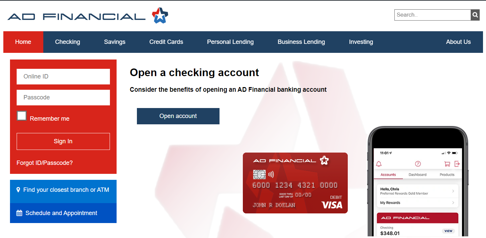

AD Financial has experienced a surge in demand for home mortgage refinancing and small business loans over the past six months. As a result, their web site and the backend services that support it have suffered from slower loan processing times while customer service has seen a rise in complaints from end users. AD Financial fully intends to maintain its brand and position in the competitive financial market. The budget has been approved to proceed with the modernization project that will help the company retain its competitive edge and customer loyaly. An initial assessment of the current web site and the loan processing services behind it revealed several areas that warrant further analysis.
It has been over a year since the Dev team refactored the online application, containerized the services and moved them out of the data center into the cloud. There is no current architecture diagram for the application and many changes have been made since its original deployment. An accurate assessment of the items below are required so the team can create a viable modernization plan:
Once we have an inventory of the application components, services, and dependencies, we need to understand what the key business transactions are in the application and the components they map to so we can prioritize them for refactoring during our modernization effort. For example, what are the transactions that access sensitive data and require auditing? What are the key business transactions associated with services we want to refactor? To answer those questions, we need to understand the following:
The landscape of new cloud services and technologies available today have made dramatic improvements in efficiency in recent years. However, the services and technologies selected and adopted need to satisfy the business and engineering requirements while also promoting adoption across the different teams involved in the modernization effort.
To that end, the business:
Validating the success of our modernization effort will be next to impossible without having an accurate understanding of what the application and business performance metrics are, as well as end user experience metrics, both pre-modernization and post-modernization. Our CTO Avi, has recommended that we capture baseline data on the following indicators for the application, both pre and post modernization to validate our success:
The challenges associated with large modernized enterprise applications in a virtual and dynamic cloud landscape can be complex. This is especially true for the operations team that manage those production applications. Now they must support applications that utilize new cloud services and technologies they may not be familiar with. The operations team recognizes that they need to realign their strategy and operational toolset to perform efficiently and effectively while staying within their budget.
Specifically, how can the operations team:
Let’s get started by setting up the prerequisites in your AWS environment.